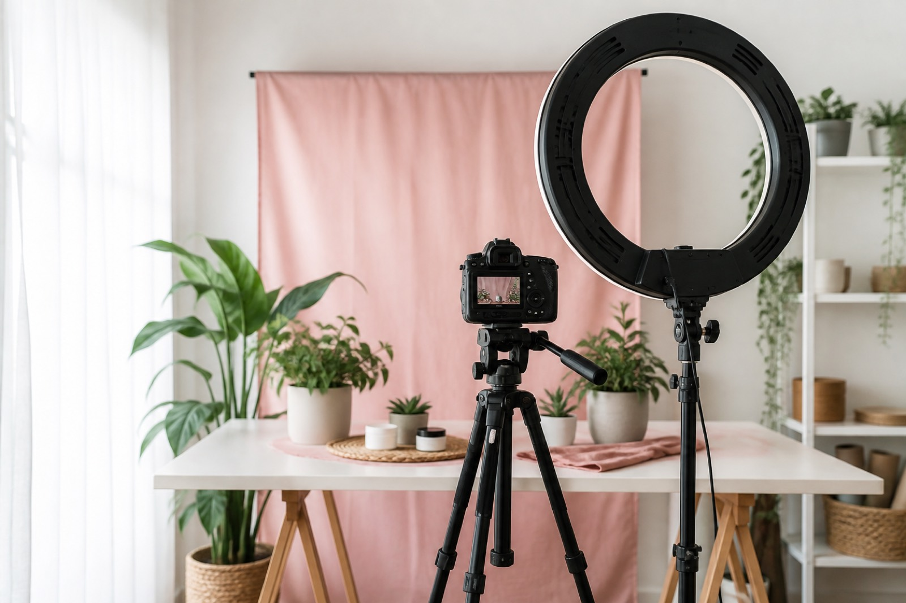

Generator
Faceless YouTube script generator
Voiceover scripts, hooks, and 9:16 on-screen text for channels that stay off camera. No avatar. No stock picker. You bring the mic and the footage.

A faceless YouTube script generator should sound like narration, not a talking-head pep talk. Set style to Faceless and ShortDrafts writes a pack you can read into a mic: ideas for a daily niche, five hooks, one timed voiceover, titles, a caption, and lines that sit on B-roll or a screen recording.
It will not design your set, clone your voice, or render a clip. If a tool promises a finished faceless MP4 from a prompt, that is a different product. This one stays in the writing step so you can batch a week of posts without inventing a new format every morning.
How to generate a faceless pack
- Open Write and set platform to YouTube Shorts (or TikTok / Reels)
- Set style to Faceless
- Name the niche and the one claim of this clip
- Pick 15–30s for a list, 30–45s if you need a short proof
Voiceover first, then cut picture to the words. Keep on-screen text above captions and like buttons. Reuse the hook structure tomorrow with a new topic, not a new format.
What still has to be yours
Footage, voice, music, and the edit. If a claim would need a license or a lab, it does not belong in a 30-second faceless script. Say what you can show. Longer notes: faceless channels use case and can I make faceless Shorts with this?
Related
YouTube Shorts script generator · Hook generator · Educational explainers
FAQ
What is a faceless YouTube script generator?
It writes narration and on-screen lines so you can post without your face. ShortDrafts does not generate footage or a voice clone.
Does this create faceless AI video?
No. You leave with a pack of words. You record, you edit, you upload.
What should I type as a topic?
A niche plus one claim you can show. Concrete beats “faceless empire.”